SEBHC.ORG

Society of Eight-Bit Heathkit Computerists
A web site dedicated to preserving the Heathkit 8 bit computers
SEBHC MEMBER SYSTEM PHOTOS
Photos of member's Heathkit systems.
Terry Gulczynski
H8-2000 Custom Cabinet
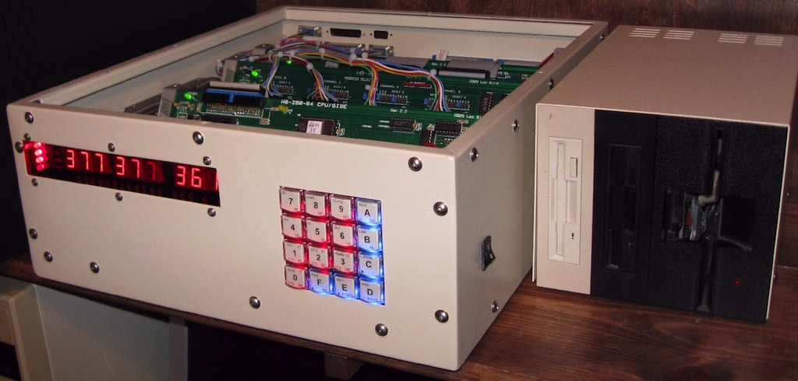
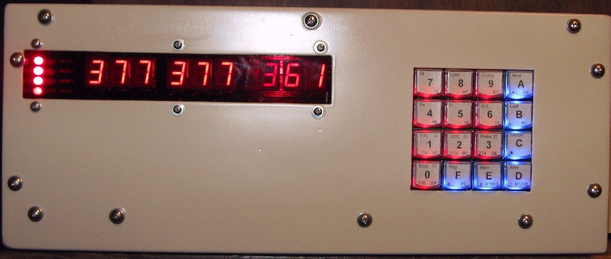
Glenn Roberts
The story from Glenn Roberts:
Taken September 1981. I lived in Knoxville at the time (worked at Oak Ridge
National Lab). This was relatively late in the "lifecycle" of the H8 so I
was late to the party (had to have a paying job before I could afford one!).
I bought the system in phases. I think initially I had just one 100K drive.
That was a tedious position to be in, as many of you remember. I even wrote
a REMark article on how to squeeze space out of your disks.
I can remember plunking down ($400??) for a second drive pretty quickly and
then subsequently a couple of 16K ($300?) cards 'til I got to 48K. Later I
bought an NOGDS sound/video card and wrote some software for that
(interfaced it to a surplus keyboard I had bought) but never expanded the H8
too much more than that. Pretty soon the Z100 came out and I bought into
that. So I never got to play with Z80 boards or soft sectored disks on my
H8 'til last year when I bought Ron West's system and then added Norberto's
Z67-IDE.
It's fun now to go "catch up" on the stuff I didn't get to play with back
then.
Heathkit H8 and H19 construction photos from 1981
Getting organized to build the H8:
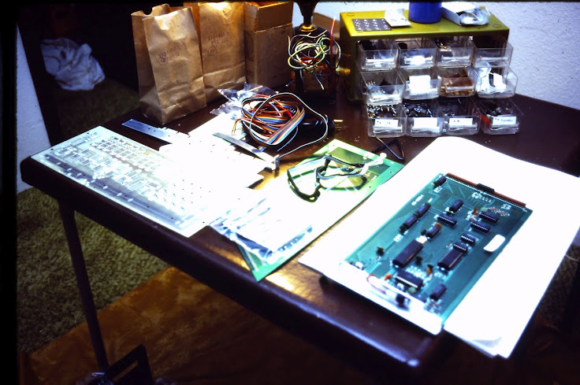
H8 CPU board (comes already assembled from Heathkit):
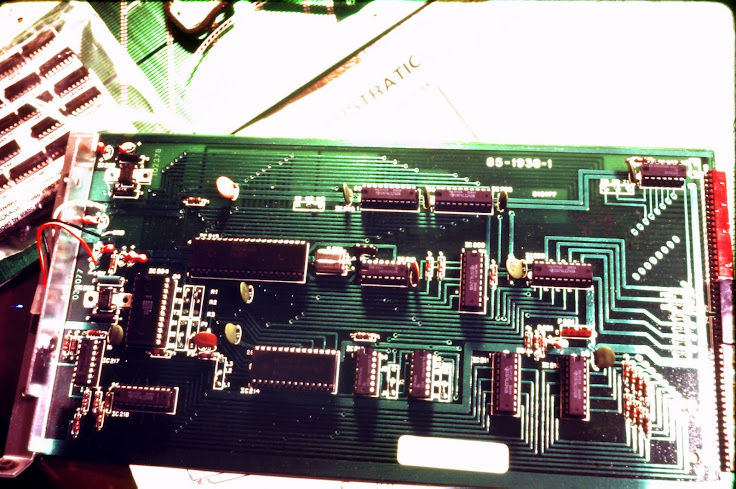
The parts:
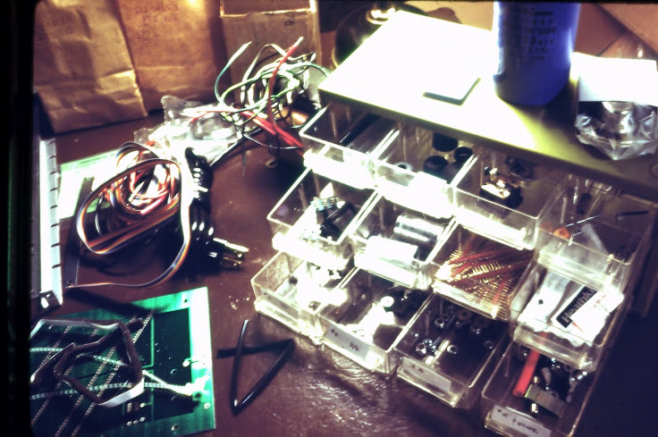
Chassis, power supply and backplane:
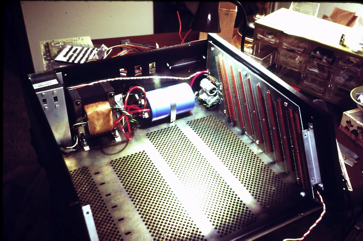
Getting ready to build the front panel:
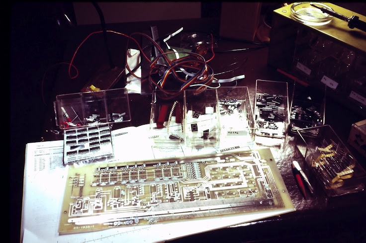
Front panel assembled, ready to test:
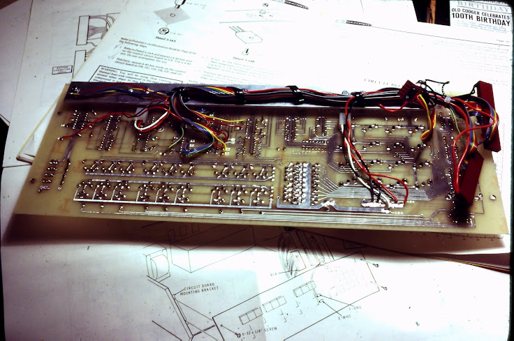
It works, first try:
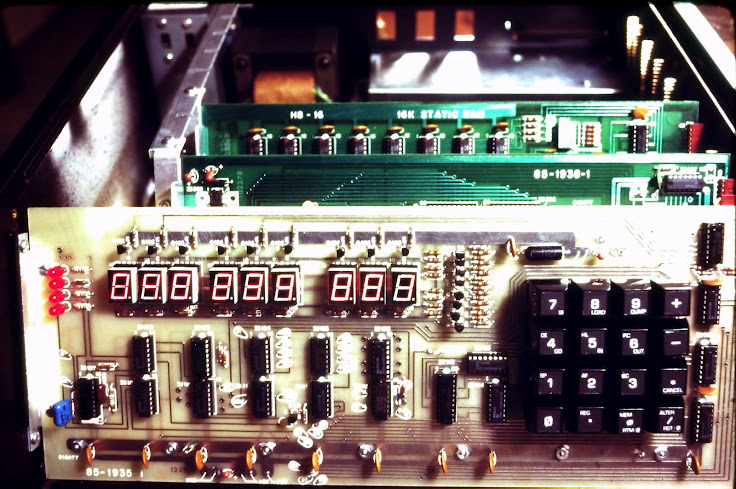
Constructing the H19 terminal:
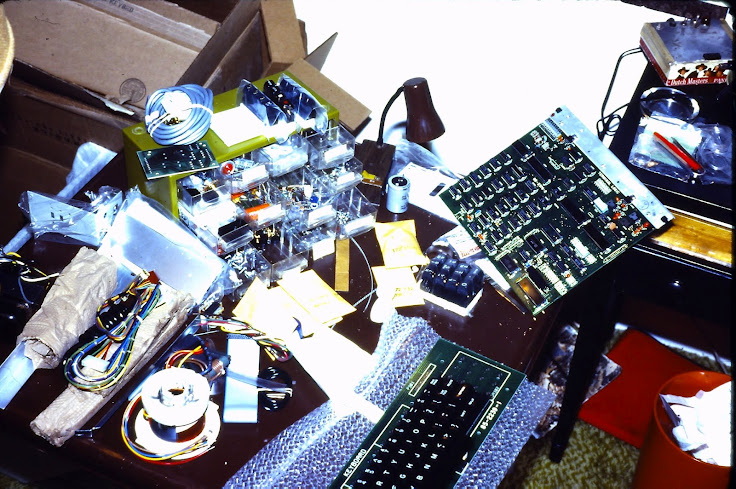
Video board (pre-assembled):
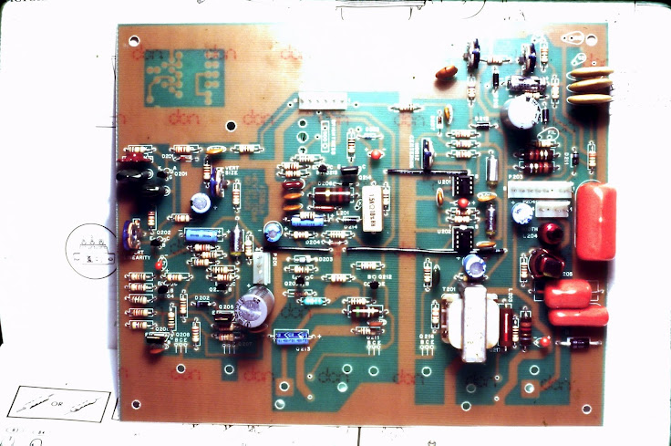
H19 base with components installed:
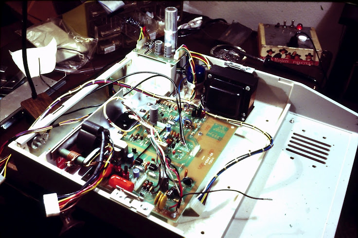
Keyboard, CRT and Terminal Logic Board installed:
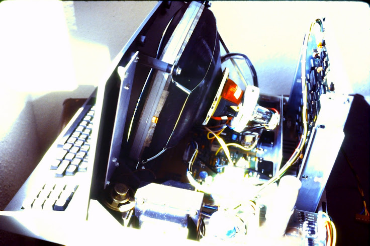
It works:
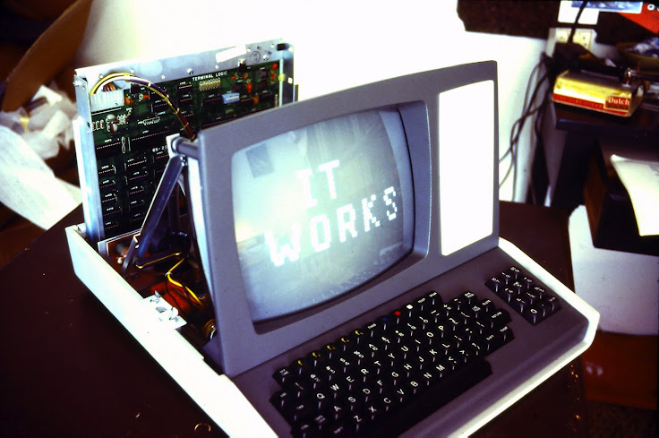
Heathkit H8-2000
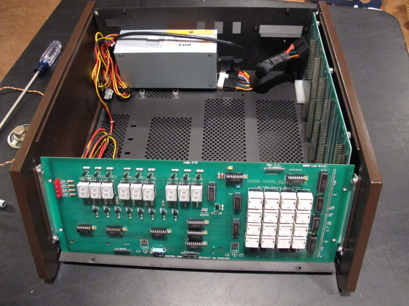
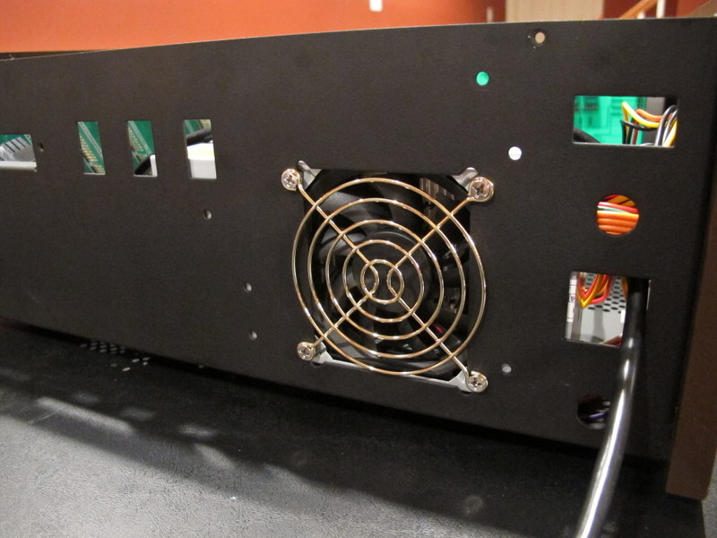
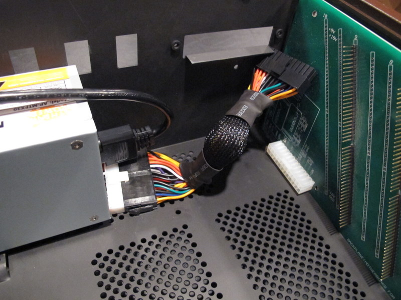
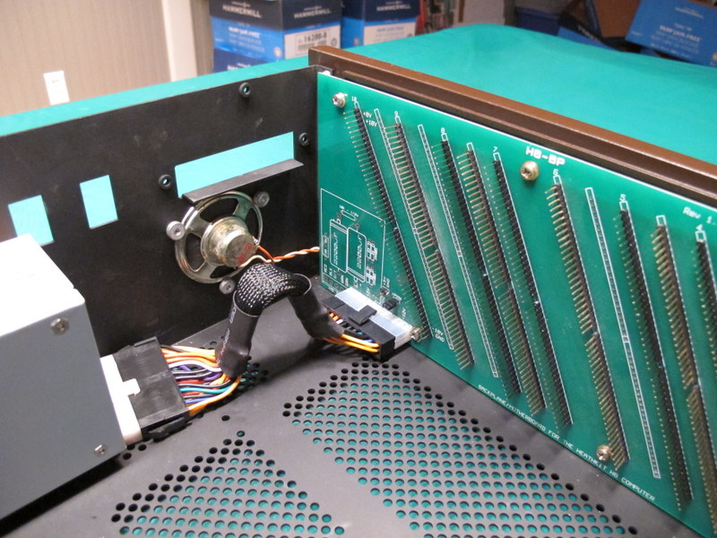
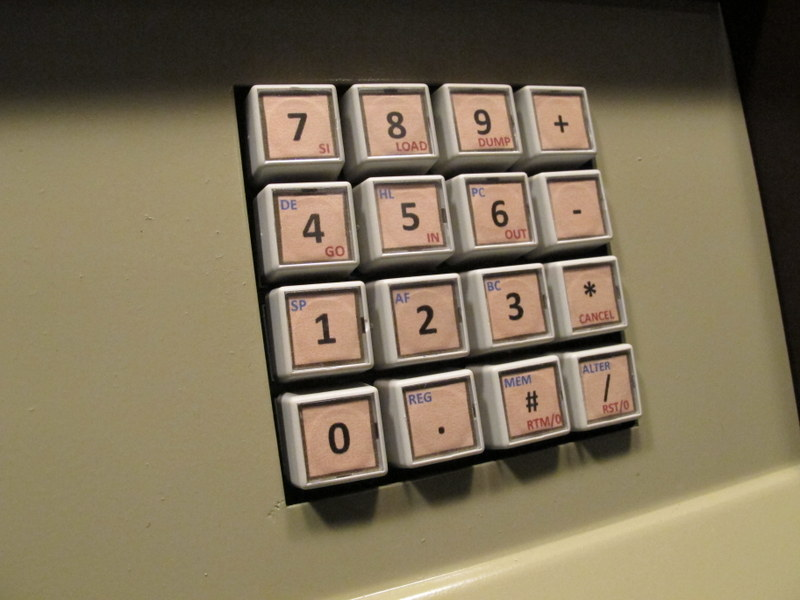
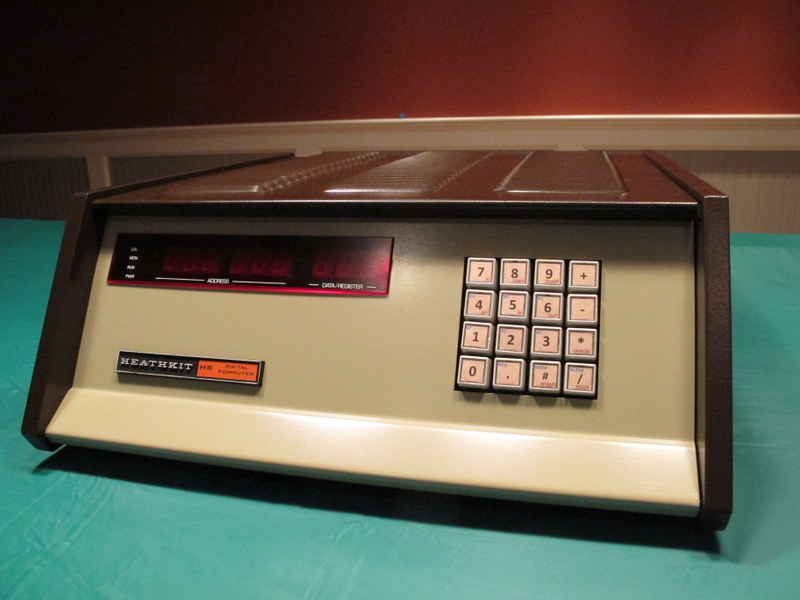
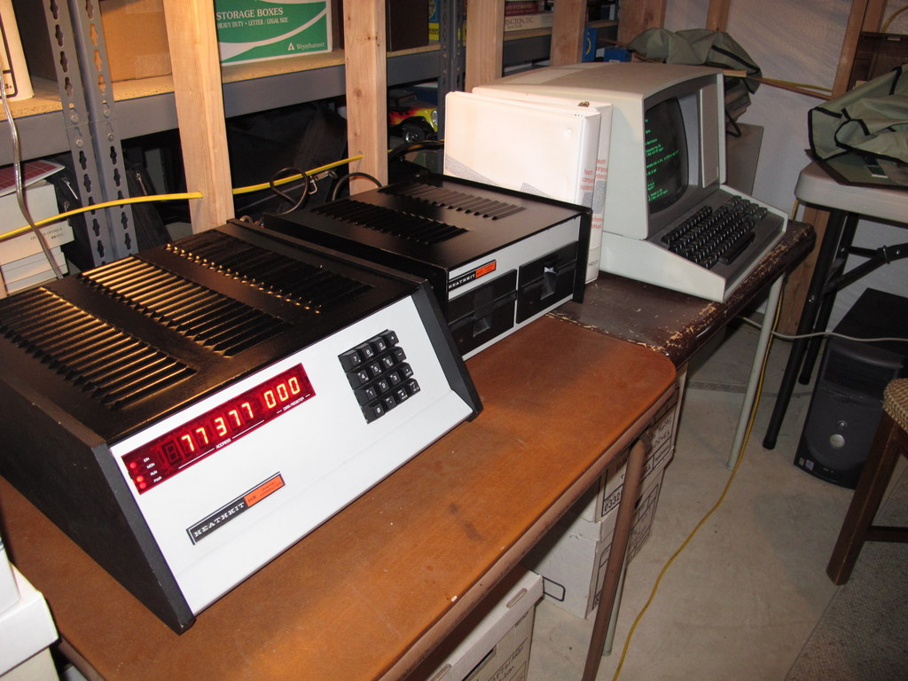
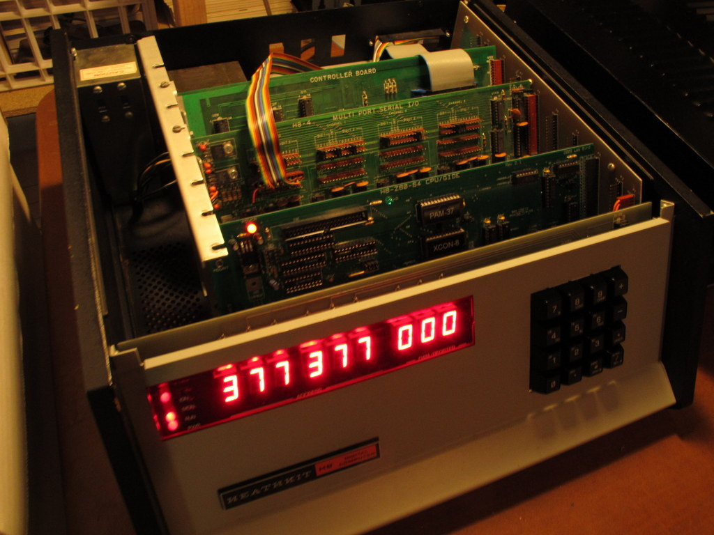
January 26, 2013